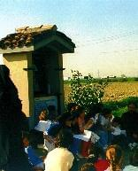

|
l'oratorio di
San Matroniano
prima della sua distruzione
negli anni '70

l'edicola campestre
edificata da pochi anni
a ricordo dell'antico oratorio
|
|
Nei campi
attorno a Sesto Ulteriano vi era un piccolo oratorio, dedicato a San Matroniano
confessore. Il 14 dicembre i devoti di Sesto celebravano solennemente
la festa liturgica di S. Matroniano; essa, preceduta da una novena e da
un triduo di predicazione tenuto nella chiesa parrocchiale, culminava
con la S. Messa in canto, celebrata nell'oratorio del santo, concorrendovi
in processione oltre ai parrocchiani di Sesto, gli abitanti delle cascine
e paesi limitrofi.
Chi è questo S. Matroniano che ha lasciato di sè una tradizione
che sconfina nella leggenda? Quando visse, quando morì, quando
venne eretto l'oratorio campestre a lui dedicato? Sono tutte domande a
cui non si può dare una risposta sicura.
La tradizione vuole che S. Matroniano, giovane di buona famiglia, sull'esempio
degli anacoreti che seguivano San Martino di Tours, si ritirasse in romitaggio
nelle selve di Sesto Ulteriano per morirvi. Il suo corpo, quando venne
ritrovato, fu portato nella basilica degli Apostoli di Milano, per esservi
sepolto in un'apposita cappella. La tradizione vuole che ciò avvenisse
durante il tempo in cui visse Sant'Ambrogio, cioè nel IV secolo.
Ma negli scritti di Sant'Ambrogio non figura mai alcun Matroniano, come
non esiste nelle biografie dei Santi fatte da Paolino e dagli altri scrittori
di quell'epoca.
Nei secoli V e VI vennero fissati i vari sacramenti ambrosiani, contenenti
le formule per le azioni sacre e tra esse i prefazi che celebravano le
"traslationese" delle reliquie. Anche in esse non si fa cenno
alcuno di Matroniano.
Nei secoli VI e VII sopravvennero le invasioni barbariche che distrussero
Milano; il vescovo Onofrio e quasi tutti i prelati fuggirono a Genova.
La chiesa venne fortemente provata, quasi a dover scomparire; però
molti preti decumani si dispersero per le campagne tenedo vivo il credo
religioso.
Durante il corso del VII secolo le cose, per Milano, migliorarono: il
nuovo vescovo torna in città. Contemporanea di questa circostanza
deve essere la vita di San Matroniano.
La conferma all'ipotesi ci viene data, oltre che dalla venerazione, già
diffusa tra la gente per tradizione, da uno scritto di un pellegrino tedesco,
conosciuto come "Noticia Ecclesiarum Urbis Romae", nel quale,
descrivendo un suo viaggio compiuto verso la fine dell'VIII secolo, egli
annota brevi notizie intorno alle chiese milanesi, tra le quali si legge:
""... Sanctus Nazarius in sua pausat Ecclesia, et in uno angulo
sanctus Morimonianus confessor..." Non stupisca l'eventuale alterazione
del nome di Matroniano in Morimonianus; in quegli anni succedeva spesso.
In questo codice, dunque, viene detto che S. Matroniano confessore è
sepolto nella basilica di S. Nazaro a Milano.
S. Matroniano è nominato con il suo giusto nome nelle litanie triduane
contenute nel Manuale Ambrosianum, codice dell'XI secolo, e nel Kalendarium
del Beroldo, scritto nel XII secolo, in cui il 14 dicembre ricorda: "Sancti
Matroniani ad S. Nazarium".
Abbiamo così accertato l'esistenza del santo, però non sappiamo
nulla di lui, all'infuori che era un semplice frate confessore in romita
solitudine.
Che sia vissuto e morto vicino a Sesto Ulteriano non lo si può
dire con certezza e, sull'esistenza dell'oratorio a lui dedicato, si può
solo arguire ch'esso venne costruito dai canonici di S. Nazaro sulle loro
terre, pur tenendo presente però che non è infrequente il
caso del trasferimento di una venerazione da un sito all'altro.
L'oratorio dovrebbe essere stato costruito dopo il XIII secolo perchè
Goffredo da Bussero non lo nomina nel suo elenco. L'attuale oratorio venne
costruito nel 1722 dall'architetto Antonio Longoni per conto dei canonici
di S. Nazaro sulle rovine di uno precedente, nello stile dell'epoca.
Sul portale in granito vi era la scritta "D. Matroniano" sormontata
da una statua in arenaria del santo, posta in una nicchia. L'altare era
in stile barocco, sormontato da una pala, trafugata. Sotto vi si poteva
leggere la scritta: "Antonio Longonus Archithectis fecit - Anno MDCCXXII".
Una lapide, posta sopra la porta d'ingresso, ricordava l'erezione dell'edificio,
rifatto su uno più antico.
Sacellum Hoc Veteri Diruto
S. Matroniano Eremicolae
Hic olim Iacenti
Basilicae Nazarianae Canonici
Anno MDCCXXII
Nel 1736 i canonici di S. Nazaro donarono alla chiesa parrocchiale di
Sesto Ulteriano un reliquiario di S. Matroniano d'argento dorato.
Detto questo possiamo concludere che a suo tempo vi fose molta venerazione
per Matroniano, semplice eremita, tanto da seppellirlo nella massima chiesa
di Milano, la Basilica degli Apostoli di San Nazaro in Brolo, accanto
ai martiri della chiesa milanese, ed elevarlo presto al rango della santità.
Dopo il XIII secolo i canonici di S. Nazaro eressero, sui loro fondi di
Sesto Ulteriano, una piccola cappella votiva tramandando la leggenda del
ritrovamento del corpo di San Matroniano in quei posti; ma nulla prova
questa pia tradizione.
Purtroppo questo insigne monumento storico e religioso è stato
recentemente abbattuto e di lui restano le memorie scritte e, per fortuna,
anche quelle fotografiche.
(da "San Giuliano Milanese: una storia da raccontare", Luciano
Previato, ed. Coop. Nuova Brianza, luglio 1989)
|
|
|